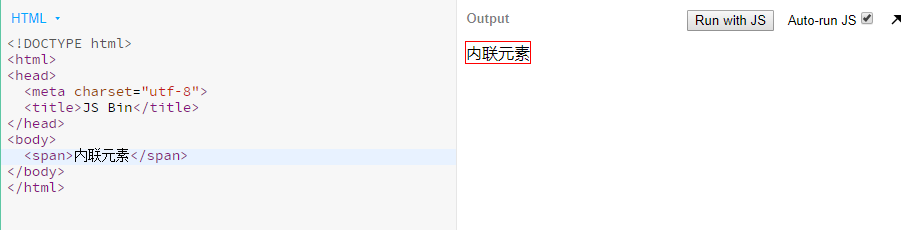
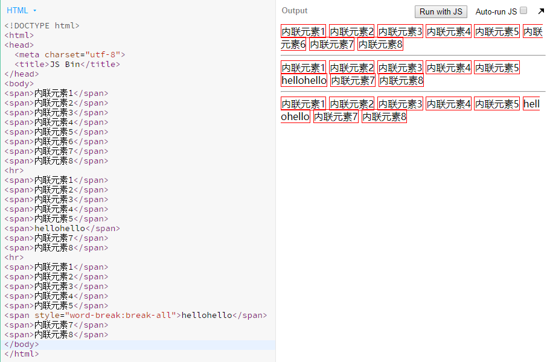
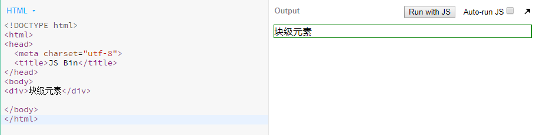
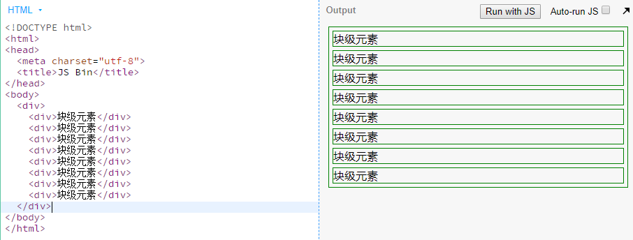

内联元素
内联元素占据它对应标签的边框所包含的空间。

内联元素从左往右流动，若宽度不够，换行继续流动。
- 当换行时的内联元素中是中文时，该元素自动分别处于第一行的结尾和第二行的开头。
- 当换行时的内联元素中是英文单词，该单词默认不可分开换行，单词自动移到第二行开头显示。
若一定要让单词分割，需要对元素的样式进行设置：- 设置样式的word-break属性为break-all ，此时单词可随意分割换行。
- 设置样式的word-break属性为break-word时，只能按单词换行。

内联元素高度基本不可测，若内联元素中只包含文字，则其高度根据文字的大小、字体等相关因素决定。当文字的font-size较小时，可用line-height控制内联元素所占高度。
内联元素的margin只能控制左右边距
内联元素列表
- b, big, i, small, tt
- abbr, acronym, cite, code, dfn, em, kbd, strong, samp, var
- a, bdo, br, img, map, object, q, script, span, sub, sup
- button, input, label, select, textarea
块级元素
块级元素占据其父元素（容器）的整个空间。

块级元素每一块都占一行，所有块从上往下依次往下流。
块级元素的高度由其内部文档流（文档内元素的流动方向）元素的高度总和决定。

使块级元素在同一行
在此提供两种实现方法，实际操作中推荐使用第二种：
- 设置每个块级元素的display属性为inline-block，同时必须设置该元素的vertical-align属性为top
- 设置所有子元素的float属性为left，同时给父元素加 clearfix 类，清除浮动。
html:1
2
3
4<div class="clearfix">
<div>块级元素</div>
<div>块级元素</div>
</div>
css:1
2
3
4
5
6
7
8div{
float: left;
}
.clearfix::after {
display: block;
content: '';
clear: both;
}
行内元素与块级元素对比
内容
一般情况下，行内元素只能包含数据和其他行内元素。
而块级元素可以包含行内元素和其他块级元素。
格式
默认情况下，行内元素不会以新行开始，而块级元素会新起一行。
脱离文档流
设置元素1相对于其父元素的绝对定位：
元素1：position: absolute;
元素1的父元素：position: relative;
box-sizing
用于更改用于计算元素宽度和高度的默认的 CSS 盒子模型
content-box是默认值。如果你设置一个元素的宽为100px，那么这个元素的内容区会有100px宽，并且任何边框和内边距的宽度都会被增加到最后绘制出来的元素宽度中。border-box告诉浏览器去理解你设置的边框和内边距的值是包含在width内的。也就是说，如果你将一个元素的width设为100px,那么这100px会包含其它的border和padding，内容区的实际宽度会是width减去border + padding的计算值。